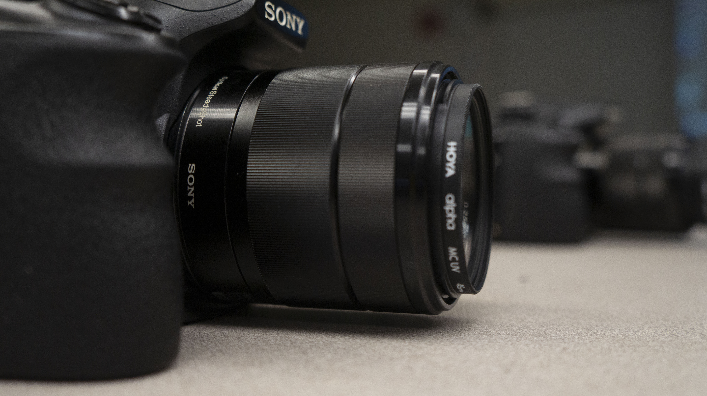

Shallow Depth of Field

Deep Depth of Field

Photoshopped Field Blur Image

Shallow Depth of Field
Deep Depth of Field
Photoshopped Field Blur Image
Shallow Camera Raw

Shallow Camera Filter Edited

Deep Camera Filter Raw

Deep Camera Filter Edited

I find taking photographs to be quite difficult already, so this assignment really upped the challenge for me! I have always been interested in how movies could make such a small place look so big or how they can portray something by just focusing on certain things, so this lesson was really insightful. For this assignment, I knew I had to take a picture of the extra cameras on the table in our lab. I love DSLR cameras, and I wanted to try to emulate those old Tumblr and Pinterest photos that focus on cameras. I took many rounds of photographs as I found that I had not gotten too great of a blurred background, or I had moved my camera when taking both the shallow and deep depth of field photos. I really struggled to get the background to be blurred and to get as much detail as I could of the camera that I was focusing on. I hope that I was able to do at least a decent job for these photos. There is definitely a learning curve for me in this lesson in terms of taking photos. However, I found that using the camera raw filter in Photoshop wasn't too bad since I do have experience editing photos to have this effect.
Home